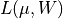
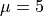

Log-likelihood for Uniform Distribution¶
Figure 5.12
An illustration of the logarithm of the posterior probability distribution
 (see eq. 5.77) for N = 100, , and W = 10.
The maximum of L is renormalized to 0, and color coded on a scale from -5 to 0,
as shown in the legend. The bottom panel shows the marginal posterior for
 (see eq. 5.79), and the left panel shows the marginal posterior
for W (see eq. 5.80).
(see eq. 5.79), and the left panel shows the marginal posterior
for W (see eq. 5.80).

data extent: 0.046954761925470656 9.883738380592263
# Author: Jake VanderPlas
# License: BSD
# The figure produced by this code is published in the textbook
# "Statistics, Data Mining, and Machine Learning in Astronomy" (2013)
# For more information, see http://astroML.github.com
# To report a bug or issue, use the following forum:
# https://groups.google.com/forum/#!forum/astroml-general
from __future__ import print_function
import numpy as np
from matplotlib import pyplot as plt
#----------------------------------------------------------------------
# This function adjusts matplotlib settings for a uniform feel in the textbook.
# Note that with usetex=True, fonts are rendered with LaTeX. This may
# result in an error if LaTeX is not installed on your system. In that case,
# you can set usetex to False.
if "setup_text_plots" not in globals():
from astroML.plotting import setup_text_plots
setup_text_plots(fontsize=8, usetex=True)
def uniform_logL(x, W, mu):
"""Equation 5.76:"""
xmin = np.min(x)
xmax = np.max(x)
n = x.size
res = np.zeros(mu.shape, dtype=float) - (n + 1) * np.log(W)
res[(abs(xmin - mu) > 0.5 * W) | (abs(xmax - mu) > 0.5 * W)] = -np.inf
return res
#------------------------------------------------------------
# Define the grid and compute logL
W = np.linspace(9.7, 10.7, 70)
mu = np.linspace(4.5, 5.5, 70)
np.random.seed(0)
x = 10 * np.random.random(100)
logL = uniform_logL(x, W[:, None], mu)
logL -= logL.max()
#------------------------------------------------------------
# Compute marginal likelihoods
n = x.size
p_mu = np.exp(logL).sum(0)
Wmin = x.max() - x.min()
p_W = (W - Wmin) / W ** (n + 1)
p_W[W < Wmin] = 0
p_W /= p_W.sum()
#------------------------------------------------------------
# Plot the results
fig = plt.figure(figsize=(5, 3.75))
# 2D likelihood plot
ax = fig.add_axes([0.35, 0.35, 0.45, 0.6], xticks=[], yticks=[])
logL[logL < -10] = -10 # truncate for clean plotting
plt.imshow(logL, origin='lower',
extent=(mu[0], mu[-1], W[0], W[-1]),
cmap=plt.cm.binary,
aspect='auto')
# colorbar
cax = plt.axes([0.82, 0.35, 0.02, 0.6])
cb = plt.colorbar(cax=cax)
cb.set_label(r'$\log L(\mu, W)$')
plt.clim(-7, 0)
ax.text(0.5, 0.93, r'$L(\mu,W)\ \mathrm{uniform,\ n=100}$',
bbox=dict(ec='k', fc='w', alpha=0.9),
ha='center', va='center', transform=ax.transAxes)
ax.set_xlim(4.5, 5.5)
ax.set_ylim(9.7, 10.7)
ax1 = fig.add_axes([0.35, 0.1, 0.45, 0.23], yticks=[])
ax1.plot(mu, p_mu, '-k')
ax1.set_xlabel(r'$\mu$')
ax1.set_ylabel(r'$p(\mu)$')
ax1.set_xlim(4.5, 5.5)
ax2 = fig.add_axes([0.15, 0.35, 0.18, 0.6], xticks=[])
ax2.plot(p_W, W, '-k')
ax2.set_xlabel(r'$p(W)$')
ax2.set_ylabel(r'$W$')
ax2.set_xlim(ax2.get_xlim()[::-1]) # reverse x axis
ax2.set_ylim(9.7, 10.7)
print("data extent:", min(x), max(x))
plt.show()